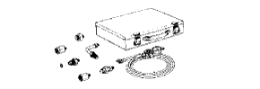

Power steering system (4WD) Preparation [Function inspection]
| PSG-6TB | Power steering Pressure gauge set Treated as Banzai Co., Ltd. | |
 | (PSG-A10) | Attachment A Treatment of Iyasaka Co., Ltd. |
| (PSG-A20) | Attachment B Treatment of Iyasaka Co., Ltd. | |
 | (PSG-FJL) | Attachment B Treated as Banzai Co., Ltd. |
| (PSG-FJS) | Attachment A Treated as Banzai Co., Ltd. | |
|  | PSG-151 | Power steering Pressure gauge set Treatment of Iyasaka Co., Ltd. |
 | QL-100N | QL Torque wrench (100N) Banzai Co., Ltd. |
 | SF6N | F -type torque wrench (6n · m) Banzai Co., Ltd. |